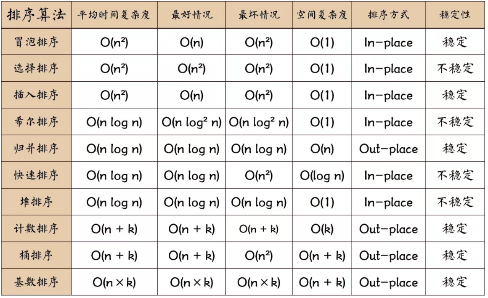

排序算法可以分为内部排序和外部排序。
内部排序是数据记录在内存中进行排序。
而外部排序是因排序的数据很大，一次不能容纳全部的排序记录，在排序过程中需要访问外存。
常见的内部排序算法有：插入排序、希尔排序、选择排序、冒泡排序、归并排序、快速排序、堆排序、基数排序等。

关于时间复杂度：
平方阶 (O(n2)) 排序 各类简单排序：直接插入、直接选择和冒泡排序。
线性对数阶 (O(nlog2n)) 排序 快速排序、堆排序和归并排序；
O(n1+§)) 排序，§ 是介于 0 和 1 之间的常数。 希尔排序
线性阶 (O(n)) 排序 基数排序，此外还有桶、箱排序。
关于稳定性：
稳定的排序算法：冒泡排序、插入排序、归并排序和基数排序。
不是稳定的排序算法：选择排序、快速排序、希尔排序、堆排序。
冒泡排序 (Bubble Sort)
每次从左到右两两比较，把大的交换到后面，每次可以确保将前M个元素的最大值移动到最右边。
- 从左开始比较相邻的两个元素x和y，如果 x > y 就交换两者
- 执行比较和交换，直到到达数组的最后一个元素
- 重复执行1和2，直到执行n次，也就是n个最大元素都排到了最后
1 | void bubble_sort(vector<int> &nums) |
插入排序（Insertion Sort）
插入排序的原理是从左到右，把选出的一个数和前面的数进行比较，找到最适合它的位置放入，使前面部分有序。
- 从左开始，选出当前位置的数x，和它之前的数y比较，如果x < y则交换两者
- 对x之前的数都执行1步骤，直到前面的数字都有序
- 选择有序部分后一个数字，插入到前面有序部分，直到没有数字可选择
1 | void insert_sort(vector<int> &nums) |
选择排序（Selection Sort）
选择排序的原理是，每次都从乱序数组中找到最大（最小）值，放到当前乱序数组头部，最终使数组有序。
- 从左开始，选择后面元素中最小值，和最左元素交换
- 从当前已交换位置往后执行，直到最后一个元素
1 | void selection_sort(vector<int> &nums) |
!!!
希尔排序（Shell Sort）
希尔排序从名字上看不出来特点，因为它是以发明者命名的。它的另一个名字是“递减增量排序算法“。这个算法可以看作是插入排序的优化版，因为插入排序需要一位一位比较，然后放置到正确位置。为了提升比较的跨度，希尔排序将数组按照一定步长分成几个子数组进行排序，通过逐渐减短步长来完成最终排序。
例子
例如 [10, 80, 70, 100, 90, 30, 20] 如果我们按照一次减一半的步长来算， 这个数组第一次排序时以3为步长，子数组是：
10 80 70 90 30 20 100
这里其实按照列划分的4个子数组，排序后结果为
10 30 20 90 80 70 100
也就是 [10, 30 20 90 80 70 100]
然后再以1为步长生成子数组
10 30 20 ..
这个时候就是一纵列了，也就是说最后一定是以一个数组来排序的。
步骤
- 计算当前步长，按步长划分子数组
- 子数组内插入排序
- 步长除以2后继续12两步，直到步长最后变成1
1 | void shell_sort(vector<int> &nums) |
归并排序（Merge Sort）
归并排序是采用分治法（Divide and Conquer）的一个典型例子。这个排序的特点是把一个数组打散成小数组，然后再把小数组拼凑再排序，直到最终数组有序。
步骤
- 把当前数组分化成n个单位为1的子数组，然后两两比较合并成单位为2的n/2个子数组
- 继续进行这个过程，按照2的倍数进行子数组的比较合并，直到最终数组有序
递归实现：
1 | // L = 左边起始位置， R = 右边起始位置， RightEnd = 右边终点位置 |
循环实现：
1 | //归并排序- 循环实现 |
这个实现中加了一个temp，是和原数组一样大的一个空间，用来临时存放排序后的子数组的。
快速排序（Quick Sort）
快速排序也是利用分治法实现的一个排序算法。快速排序和归并排序不同，它不是一半一半的分子数组，而是选择一个基准数，把比这个数小的挪到左边，把比这个数大的移到右边。然后不断对左右两部分也执行相同步骤，直到整个数组有序。
步骤
- 用一个基准数将数组分成两个子数组
- 将大于基准数的移到右边，小于的移到左边
- 递归的对子数组重复执行1，2，直到整个数组有序
1 | void quick_sort(vector<int> &nums, int b, int e, vector<int> &temp) |
1 | void quick_sort(vector<int> &nums, int b, int e) |
堆排序（Heap Sort）
堆排序经常用于求一个数组中最大k个元素时。因为堆实际上是一个完全二叉树，所以用它可以用一维数组来表示。因为最大堆的第一位总为当前堆中最大值，所以每次将最大值移除后，调整堆即可获得下一个最大值，通过一遍一遍执行这个过程就可以得到前k大元素，或者使堆有序。
在了解算法之前，首先了解在一维数组中节点的下标：
- i节点的父节点 parent(i) = floor((i-1)/2)
- i节点的左子节点 left(i) = 2i + 1
- i节点的右子节点 right(i) = 2i + 2
步骤
- 构造最大堆（Build Max Heap）：首先将当前元素放入最大堆下一个位置，然后将此元素依次和它的父节点比较，如果大于父节点就和父节点交换，直到比较到根节点。重复执行到最后一个元素。
- 最大堆调整（Max Heapify）：调整最大堆即将根节点移除后重新整理堆。整理方法为将根节点和最后一个节点交换，然后把堆看做n-1长度，将当前根节点逐步移动到其应该在的位置。
- 堆排序（HeapSort）：重复执行2，直到所有根节点都已移除。
1 | void heap_sort(vector<int> &nums) |